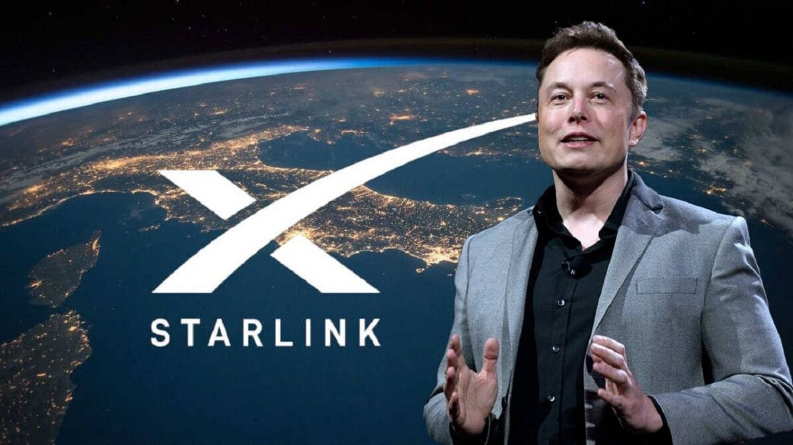

Starlink
A Starlink, empresa liderada por Elon Musk, atua no segmento de tecnologia e comunicação via satélite. A empresa tem como missão conectar o mundo inteiro com internet de alta velocidade e baixa latência.

Utilizando constelações de satélites de baixa órbita, a Starlink oferece uma solução inovadora para áreas rurais e remotas, onde o acesso tradicional à internet é limitado ou inexistente. Com um compromisso firme com a inovação, sustentabilidade e acessibilidade, a Starlink não apenas facilita o acesso à informação e comunicação, mas também abre novas fronteiras para o desenvolvimento global.
| Nome da empresa: Starlink |
|---|
| Segmento atuante: Tecnologia e comunicação via satélite. |
| Portfólio de produtos ou serviços: Starlink oferece serviços de internet via satélite, com o objetivo de fornecer conectividade global de alta velocidade, especialmente em áreas rurais e remotas. |
| Diferenciais mercadológicos: O diferencial da Starlink está principalmente na proposta de oferecer internet de alta velocidade em regiões onde o acesso tradicional é limitado. Utilizando constelações de satélites de baixa órbita para reduzir latência, a Starlink torna-se um potencial para revolucionar o acesso à internet em todo o mundo. |
| Missão, visão e valores:
- A missão da Starlink é conectar o mundo inteiro com internet de alta velocidade, buscando criar uma rede global que beneficie pessoas e comunidades remotas. - A visão é possibilitar que todos tenham acesso equitativo à internet, independentemente da localização geográfica. - Valores incluem inovação tecnológica, sustentabilidade e acessibilidade. |
| Público-alvo: Principalmente pessoas e comunidades em áreas rurais ou remotas que enfrentam dificuldades para obter acesso à internet de alta velocidade através de meios tradicionais, como cabos terrestres. |